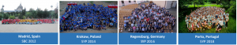

West Europe Student-Young Professional Congress (WESYP) brings together young professionals and IEEE student members and volunteers from Western Europe together to share their stories and discuss the on-going advancements in the world of science and technology. Focused on the theme “Building a Sustainable Future”, this year’s WESYP is a platform to network, train leaders of tomorrow and share thoughts on technological advancements for a sustainable future.
Hosted by Glasgow Caledonian University (GCU)
Glasgow Caledonian University (GCU) is home to one of the most active IEEE student branches in the country and host for IEEE Region 8 HISTELCON 2019. The GCU IEEE branch is experienced in organising a number of regular activities including conferences like the Research in Sustainable Environments Conference (RiSE) and last year was actively involved with the IEEE International Universities Power Engineering Conference (UPEC) 2018, hosting 250 delegates over 4 days.
The city campus of Glasgow Caledonian University is an example of modern architecture in the heart of old Glasgow city. The campus is located in the city centre, it is easily accessible through public transport and has great open areas, and located near plenty of restaurants and entertainment.
The editions of the Student-Young Professional Congress have been a great success over the years: Istanbul 1998, Eindhoven 2000, Cairo 2002, Passau 2004, Paris 2006, London 2008, Leuven 2010, Madrid 2012, Krakow 2014, Regensburg 2016, Porto 2018, and soon Glasgow 2019.

[Source: http://syp.ieee-pt.org/about.html]